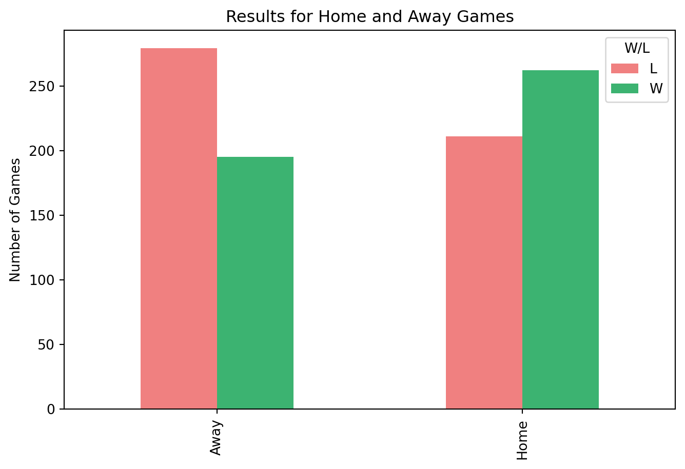

Having usable, clean data is essential part of the data science process. In this tutorial I will teach some basic data wrangling steps and teach how users how to create a few simple visuals for that data. This blog will help students and other users understand the importance of data wrangling as well as introduce them to simple data wrangling steps. I will be using data from the Los Angeles Lakers trying to answer the question of if home court advantage really helps teams win.
Importing Data
The very first thing that we need to do in answering the question of if home court advantage really helps teams win is to get clean and usable data that will show us trends and help us come up with an answer. The data set that I found contains quite a bit of information, such as points scored, field goals made, and free throw percentage. However, in this tutorial we are not interested in those variables. As part of data wrangling we can make the data a whole lot cleaner simply by eliminating the variables that we are not interested in. When reading in data using the “pd.read_csv()” function we can use the built-in feature of “usecols =” to select the columns from the dataset that we are interested in. Here you can see that I selected to use the columns “MATCH UP”, “GAME DATE”, and “W/L”
MATCH UP GAME DATE W/L
0 LAL @ NOP 05/16/2021 W
1 LAL @ IND 05/15/2021 W
2 LAL vs. HOU 05/12/2021 W
3 LAL vs. NYK 05/11/2021 W
4 LAL vs. PHX 05/09/2021 W
Data Wrangling
After importing the data I need to do some data wrangling in order to do any anlysis towards the main question. I renamed the columns using the function “data.rename” for simplicity. After renaming the columns it was easier to run it through a function to seperate Home and Away games. To do this I created the “home_away” fuction which goes through the columns and if the designated string is in the value it assigns either “Home” or “Away”. I then applied this to the data and created a new column so that I can easily see whether the game was at home or if it was away.
Match_Up Game_Date W/L Home/Away
0 LAL @ NOP 05/16/2021 W Away
1 LAL @ IND 05/15/2021 W Away
2 LAL vs. HOU 05/12/2021 W Home
3 LAL vs. NYK 05/11/2021 W Home
4 LAL vs. PHX 05/09/2021 W Home
Data Analysis and Visualization
After doing some basic data wrangling, I did some simple data analysis and created a visual to help understand the data. Since I am interested in learning whether home court advantage exists for this basketball team I calculated the win percentages at both home and away. So we can see in the code output that the team wins at home 55 percent of the time and wins on the road 41 percent of the time. The visual that I created shows both the wins and losses at home and away so viewers can see the difference and compare. This visual helps us to see quickly that the team does win more games when playing at home and we can see that percentage that we just calculated.
Code
import matplotlib.pyplot as plthome_wins = data[(data['Home/Away'] =='Home') & (data['W/L'] =='W')]home_total = data[data['Home/Away'] =='Home']home_win_pct =len(home_wins) /len(home_total)print(home_win_pct)away_wins = data[(data['Home/Away'] =='Away') & (data['W/L'] =='W')]away_total = data[data['Home/Away'] =='Away']away_win_pct =len(away_wins) /len(away_total)print(away_win_pct)summary = pd.crosstab(data['Home/Away'], data['W/L'])summary.plot(kind='bar', figsize=(8,5), color=['lightcoral', 'mediumseagreen'])plt.title('Results for Home and Away Games')plt.xlabel(None)plt.ylabel('Number of Games')
0.5539112050739958
0.41139240506329117
Text(0, 0.5, 'Number of Games')

Conclusion and Call to Action
After doing just some basic data wrangling, analysis and visualization we can see that the team does win more when they are playing at home, however just with this basic level of anaysis we cannot make any strong conclusions that playing at home will lead to more wins than playing away. In order to form that conclusion we would need to do a more in depth analysis. The main takeaway for readers should be that there are simple ways to import, clean, analyze and visualize data that can be done with a few simple functions and packages. People interested in data can apply this same process by following the steps and even utalizing some of the code shown here to help them understand the data that they are working on.
Source Code
## Data Wrangling And Visual### IntroductionHaving usable, clean data is essential part of the data science process. In this tutorial I will teach some basic data wrangling steps and teach how users how to create a few simple visuals for that data. This blog will help students and other users understand the importance of data wrangling as well as introduce them to simple data wrangling steps. I will be using data from the Los Angeles Lakers trying to answer the question of if home court advantage really helps teams win.### Importing Data The very first thing that we need to do in answering the question of if home court advantage really helps teams win is to get clean and usable data that will show us trends and help us come up with an answer. The data set that I found contains quite a bit of information, such as points scored, field goals made, and free throw percentage. However, in this tutorial we are not interested in those variables. As part of data wrangling we can make the data a whole lot cleaner simply by eliminating the variables that we are not interested in. When reading in data using the "pd.read_csv()" function we can use the built-in feature of "usecols =" to select the columns from the dataset that we are interested in. Here you can see that I selected to use the columns "MATCH UP", "GAME DATE", and "W/L"```{python}import pandas as pd, jsoncols = ["MATCH UP", "GAME DATE", "W/L"]data = pd.read_csv("Lakers2009-2021.csv", usecols = cols)print(data.head())```### Data WranglingAfter importing the data I need to do some data wrangling in order to do any anlysis towards the main question. I renamed the columns using the function "data.rename" for simplicity. After renaming the columns it was easier to run it through a function to seperate Home and Away games. To do this I created the "home_away" fuction which goes through the columns and if the designated string is in the value it assigns either "Home" or "Away". I then applied this to the data and created a new column so that I can easily see whether the game was at home or if it was away.```{python}data.rename(columns = {'MATCH\xa0UP' : 'Match_Up','GAME\xa0DATE' : 'Game_Date'}, inplace=True)def home_away(x): x = x.strip().lower()if"vs."in x:return"Home"elif"@"in x: return"Away"data["Home/Away"] = data["Match_Up"].apply(home_away)print(data.head())```### Data Analysis and VisualizationAfter doing some basic data wrangling, I did some simple data analysis and created a visual to help understand the data. Since I am interested in learning whether home court advantage exists for this basketball team I calculated the win percentages at both home and away. So we can see in the code output that the team wins at home 55 percent of the time and wins on the road 41 percent of the time. The visual that I created shows both the wins and losses at home and away so viewers can see the difference and compare. This visual helps us to see quickly that the team does win more games when playing at home and we can see that percentage that we just calculated.```{python}import matplotlib.pyplot as plthome_wins = data[(data['Home/Away'] =='Home') & (data['W/L'] =='W')]home_total = data[data['Home/Away'] =='Home']home_win_pct =len(home_wins) /len(home_total)print(home_win_pct)away_wins = data[(data['Home/Away'] =='Away') & (data['W/L'] =='W')]away_total = data[data['Home/Away'] =='Away']away_win_pct =len(away_wins) /len(away_total)print(away_win_pct)summary = pd.crosstab(data['Home/Away'], data['W/L'])summary.plot(kind='bar', figsize=(8,5), color=['lightcoral', 'mediumseagreen'])plt.title('Results for Home and Away Games')plt.xlabel(None)plt.ylabel('Number of Games')```### Conclusion and Call to ActionAfter doing just some basic data wrangling, analysis and visualization we can see that the team does win more when they are playing at home, however just with this basic level of anaysis we cannot make any strong conclusions that playing at home will lead to more wins than playing away. In order to form that conclusion we would need to do a more in depth analysis. The main takeaway for readers should be that there are simple ways to import, clean, analyze and visualize data that can be done with a few simple functions and packages. People interested in data can apply this same process by following the steps and even utalizing some of the code shown here to help them understand the data that they are working on.